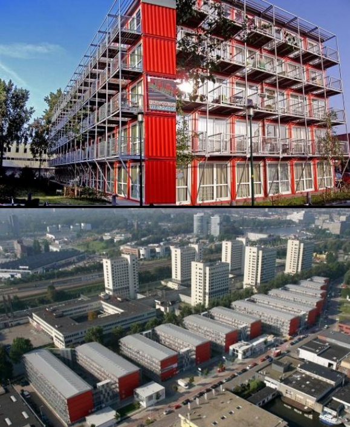
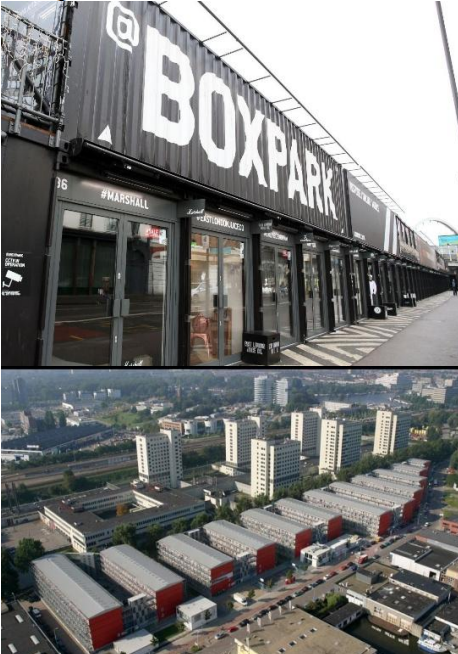

ЭКОЛОГИЧЕСКИЕ АСПЕКТЫ ПОВТОРНОГО ИСПОЛЬЗОВАНИЯ МОРСКИХ КОНТЕЙНЕРОВ В СТРОИТЕЛЬСТВЕ
Аннотация
Польза повторного использования контейнеров для разных назначений, как жилье, общественные назначения зданий и тд.
Статья
Инженерия и робототехника
14.10.2026
Русский
Аннотация
В статье рассматриваются экологические аспекты повторного использования морских контейнеров в строительстве как одного из перспективных направлений устойчивой архитектуры. Анализируется влияние повторного использования контейнеров на сокращение количества строительных отходов, снижение потребления первичных материалов и уменьшение экологической нагрузки, связанной с производством и утилизацией строительных конструкций. Рассматриваются основные преимущества и ограничения применения морских контейнеров в качестве строительных модулей, включая вопросы энергоэффективности, теплоизоляции, долговечности, транспортировки и адаптации контейнеров к различным функциональным требованиям. Особое внимание уделяется принципам циркулярной экономики и рационального использования существующих ресурсов. На основе рассмотренных подходов определяется экологический потенциал контейнерной архитектуры и возможность её применения при создании современных энергоэффективных и ресурсосберегающих объектов.
1. ВВЕДЕНИЕ
В условиях стремительного роста урбанизации и увеличения объемов строительных отходов особую актуальность приобретают принципы устойчивого развития и рационального использования ресурсов. Одним из перспективных направлений современной архитектуры является повторное использование морских контейнеров в качестве строительных модулей. Такой подход позволяет сократить объем строительных отходов, уменьшить потребление природных материалов, снизить стоимость строительства и уменьшить выбросы углекислого газа.
Морские контейнеры представляют собой прочные стальные конструкции, рассчитанные на многолетнюю эксплуатацию в сложных климатических условиях. После окончания срока службы в транспортной отрасли они могут получить «вторую жизнь» в строительстве жилых домов, общественных зданий, гостиниц, офисов, библиотек, учебных центров и коммерческих объектов.
1.1 Аналоговый материал
| № | Наименование | Особенности Архитектуры |
|---|---|---|
| 1 | Keetwonen
 |
Функция: студенческое общежитие. Комплекс состоит более чем из тысячи контейнеров. Каждый жилой модуль включает:
Экологические преимущества
|
| 2 | Boxpark Shoreditch
 |
Boxpark считается одним из первых крупных коммерческих объектов, полностью выполненных из морских контейнеров. В состав комплекса входят:
Преимущества
|
2. ПОВТОРНОЕ ИСПОЛЬЗОВАНИЕ МОРСКИХ КОНТЕЙНЕРОВ КАК НАПРАВЛЕНИЕ УСТОЙЧИВОГО СТРОИТЕЛЬСТВА
Ежегодно во всем мире тысячи морских контейнеров выводятся из эксплуатации. Их утилизация требует значительных финансовых затрат и сопровождается высоким уровнем загрязнения окружающей среды. Использование контейнеров в качестве строительных модулей позволяет значительно сократить количество металлических отходов и уменьшить потребность в производстве новых строительных материалов.
Основными экологическими преимуществами контейнерного строительства являются:
- повторное использование металлических конструкций сокращение строительных отходов;
- уменьшение выбросов CO₂;
- снижение расхода бетона, кирпича и стали;
- сокращение сроков строительства;
- возможность повторного демонтажа и переноса здания.
Кроме того, контейнерные здания соответствуют принципам циркулярной экономики, при которой строительные материалы сохраняют свою ценность и используются повторно.
2.1. Конструктивные особенности
Морской контейнер представляет собой модульную металлическую конструкцию стандартных размеров:
- 20 футов (около 6 м);
- 40 футов (около 12 м).
Благодаря унифицированным размерам контейнеры легко объединяются между собой как по горизонтали, так и по вертикали, образуя здания различной этажности и конфигурации.
При проектировании выполняются следующие мероприятия:
- усиление каркаса после вырезания проемов;
- устройство теплоизоляции;
- защита металлических поверхностей от коррозии;
- монтаж инженерных систем;
- внутренняя отделка.
Контейнеры могут использоваться как самостоятельные помещения либо объединяться в единое пространство путем удаления внутренних стен.
В настоящее время контейнерные технологии активно применяются при строительстве:
Библиотек, образовательных центров, выставочных павильонов, молодежных центров, коворкингов, офисов, гостиниц, временного жилья.
Список литературы:
- Kotnik J. Container Architecture. — Barcelona: Links International, 2008. — 240 p.
- Slawik H., Bergmann J., Buchmeier M., Tinney S. Container Atlas: A Practical Guide to Container Architecture. — Berlin: Gestalten, 2010. — 256 p.
- Kramer S. The Box: Architectural Solutions with Containers. — Berlin: Braun Publishing, 2014. — 191 p.
- Broto C. Radical Container Architecture. — Barcelona: Links Books, 2015. — 240 p.
- Pereira-de-Oliveira L., Bernardo L., Marques A. Architectural building design with refurbished shipping containers: A typological and modular approach // Journal of Engineering Research. — 2022. — Vol. 10, No. 1. — P. 1–20.
- Bertolini M., Guardigli L. Upcycling shipping containers as building components: An environmental impact assessment // International Journal of Life Cycle Assessment. — 2020. — Vol. 25. — P. 947–963.
- Radwan A. H. Containers Architecture: Reusing Shipping Containers in Making Creative Architectural Spaces // Research paper. — 2018.
- Sholanke A. B., Babalola O. D., Nzeh M. E. Evaluation of net-zero strategies in shipping container architecture // Frontiers in Built Environment. — 2026.
- Martin K., Austin S., Robins P. Evaluation, modeling, and analysis of shipping container building structures // Engineering Structures. — 2012. — Vol. 43. — P. 48–57.
- Saarinen H. When Time Jumps Through the Roof: Re-use/Re-model – The Shipping Container // C3 Magazine. — 2017.